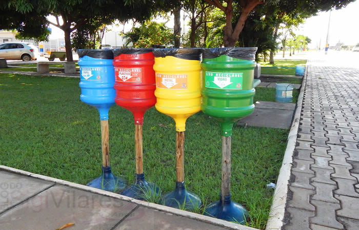
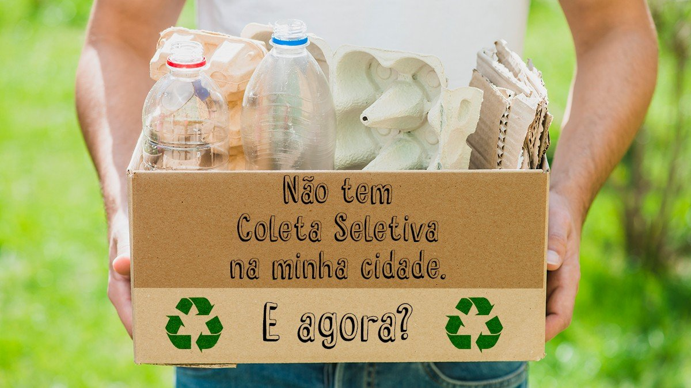
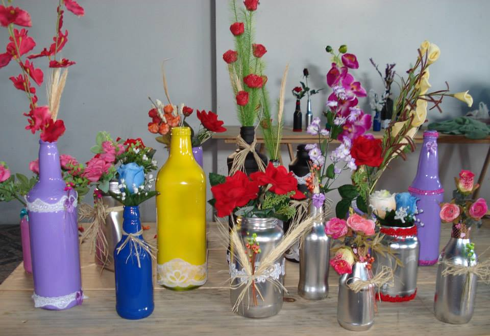

RECICL ART
São BENEDITO - GUARACIABA DO NORTE, CearáAplicação com intuito no desenvolvimento ambiental


Portfólio
-

Coleta Seletiva
Coleta seletiva tem como principal objetiv, facilitar a separação do lixo gerado em nossas casas. Além de contribuir para com os trabalhadores dessa área como garis, catatores dentre outros. Também contribui para diminuição dos lixos nas ruas, uma vez que as ...
-

Como contribuir
Na minha cidade não possui coleta seletiva, o que fazer? implementar a ideia na sua própria casa é o primeiro passo se você mora em uma comunidade com apenas um ponto de coleta, tente da a iniciativa conversando com os demais moradores juntos coloquem em ação ideias como várias lixeiras com destinação de lixos diferentes
-

Artesanato
Existem diversas pessoas que vivem da renda do artesanato e muitas vezes a materia prima para esses são materiais vindos da reciclagem, unindo o útil ao agradável, pode ser feita a coleta e separação de itens e encaminhados aos artesões locais.
© 2021 EQUIPE DO 7º SEMESTRE DE CIÊNCIAS DA COMPUTAÇÃO - PROJETO SOCIAL